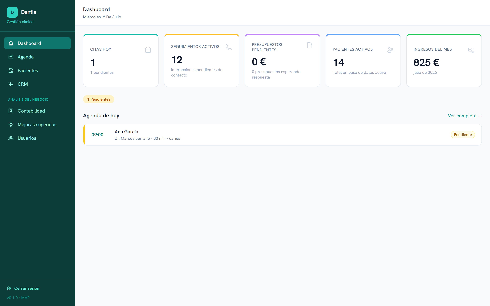
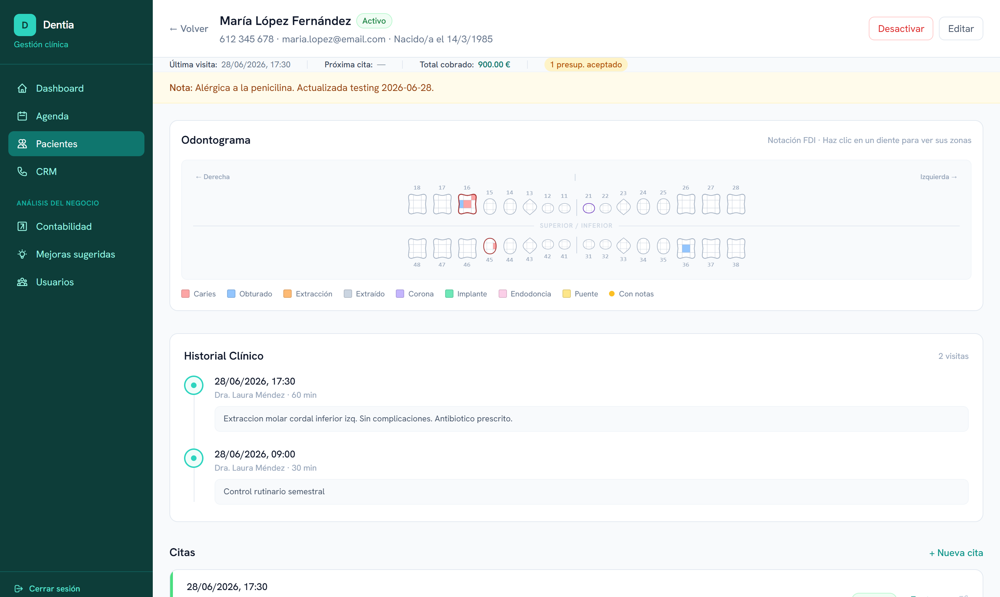
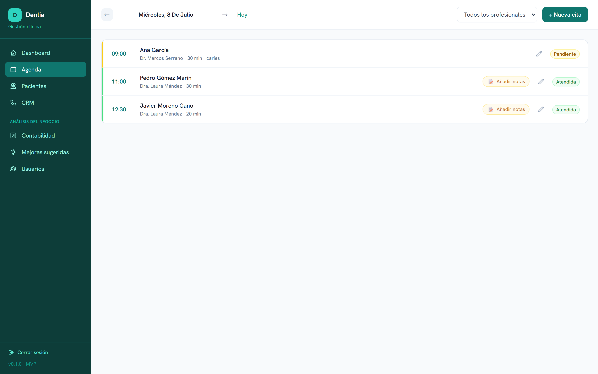
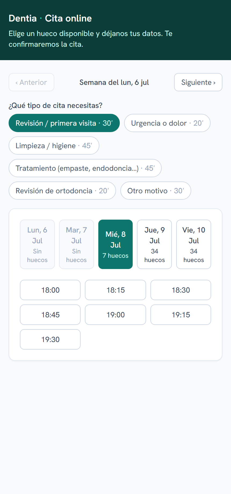
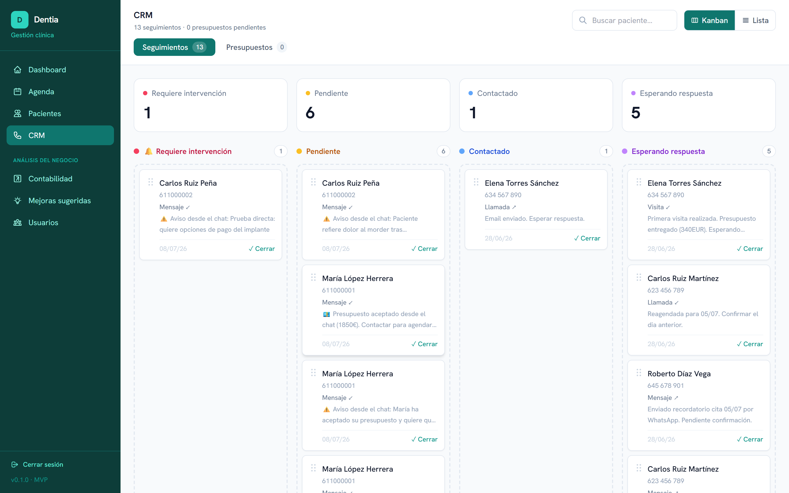
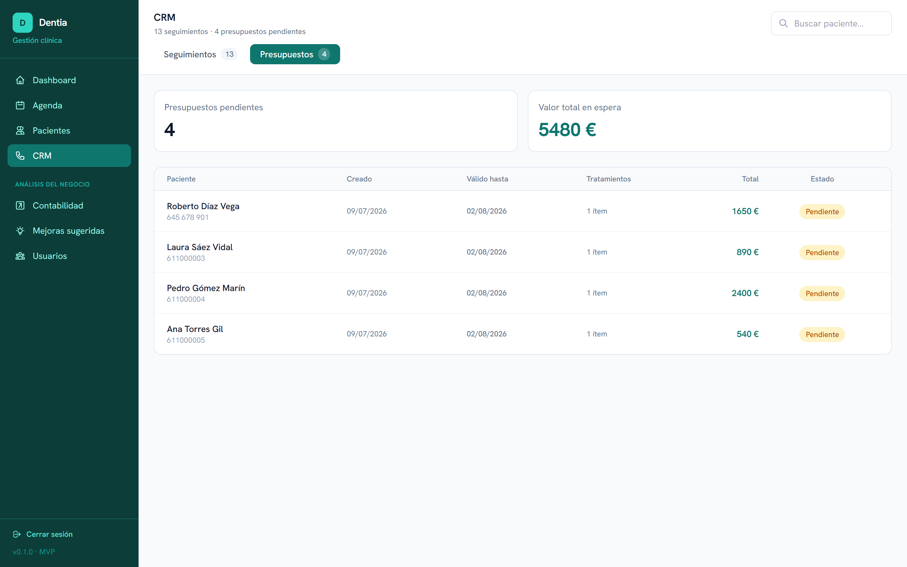
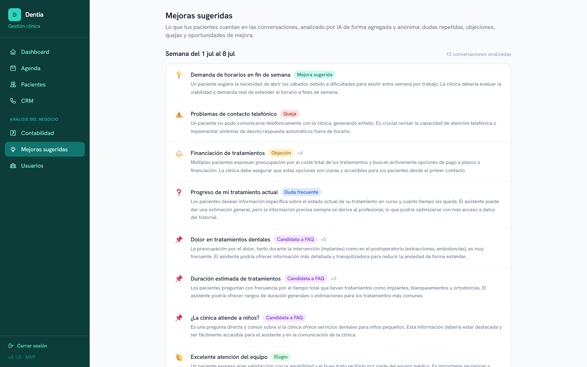
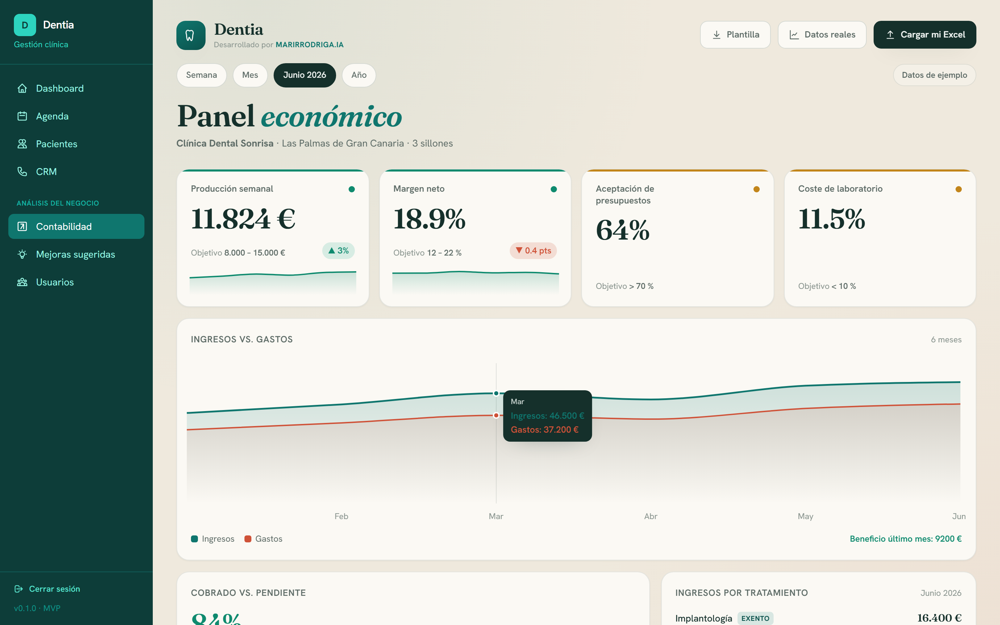

Dentia gestiona tu clínica en la nube —agenda, historia clínica, odontograma, presupuestos y facturación— y le suma un asistente de IA que atiende a tus pacientes por WhatsApp, cierra presupuestos, hace el seguimiento que hoy nadie tiene tiempo de hacer y hasta te lleva la contabilidad sola. Sin contratar a nadie más, aunque tu equipo odie la tecnología. Por menos de lo que cuesta el software dental de siempre.
No es por falta de trabajo. Es por las tareas que nadie tiene tiempo de hacer.
El paciente que no confirma y no aparece. Esa hora no se recupera — y si era una endodoncia, son cientos de euros tirados.
Se lo lleva "para pensarlo" y nadie vuelve a llamarle, porque recepción no da abasto. Implantes y ortodoncias muriendo en un cajón.
El paciente llama a las 20:30, cuando por fin tiene un minuto. No lo coge nadie… y llama a la siguiente clínica de Google.
Dentia es un software de gestión clínica completo — y encima automatiza lo que en otras clínicas hace una persona. La IA no es un chatbot genérico añadido por encima: es parte del software desde el primer día, con acceso a la agenda y al historial reales.

La pantalla de inicio te muestra el día de un golpe de vista: citas de hoy, seguimientos, presupuestos abiertos e ingresos. Sencillo desde el primer día, sin manuales.
Debajo de cada módulo normal hay una IA trabajando. Esto es exactamente lo que añade en cada sitio — y lo que ganas tú.
Dentia tiene todo lo que esperas de un software dental — y encima nuestros añadidos con IA.
| Función | Dentia | Software dental tradicional |
|---|---|---|
| Agenda y gestión de citas | Sí | Sí |
| Ficha e historia clínica | Sí | Sí |
| Odontograma digital | Sí | Sí |
| Presupuestos, pagos y facturación | Sí | Sí |
| Radiografías, fotos clínicas y documentos del paciente | Sí | Sí |
| Roles y permisos de equipo | Sí | Sí |
| Firma digital de consentimientos | Sí | Solo algunos |
| 100% en la nube, desde cualquier dispositivo | Sí | A menudo Windows |
| Reserva online sin huecos muertos | Sí | Franjas fijas de media hora |
| Asistente de IA por WhatsApp | Sí | No |
| Acompañamiento de presupuestos con IA | Sí | No |
| Seguimiento autónomo + aviso de intervención | Sí | No |
| CRM kanban de seguimiento de pacientes | Sí | No |
| Seguimiento de presupuestos con su valor en juego | Sí | Solo listados |
| Contabilidad autónoma analizada por IA | Sí | No |
| Análisis IA de conversaciones y mejoras sugeridas | Sí | No |
| Sin cuota de alta ni permanencia | Sí | Varía |
| Convive con tu sistema en la transición | Sí | Migración brusca |
Sabemos que cambiar de sistema da miedo — datos perdidos, equipo desorientado, días de caos. Dentia entra sin sobresaltos, conviviendo con lo que ya usas el tiempo que haga falta.
Las citas pueden reflejarse en el calendario que usáis hoy durante la adaptación.
Sigues facturando como hasta ahora mientras adoptas Dentia a tu ritmo.
El equipo gestiona a mano lo que quiera; la IA trabaja en paralelo sobre los mismos datos.
Se empieza por lo que más alivia y se suman funciones según el equipo gana confianza.
Odontograma, historia clínica, tratamientos, presupuestos, pagos y seguimientos, sin saltar entre ventanas.

Los 32 dientes con sus estados en color. Un clic para editar.
Cada visita queda registrada con sus tratamientos. Se construye sola.
El dentista apunta en las notas de la cita lo que detecta y hace, y esas notas pasan solas a la historia clínica. Y si con las prisas se olvida, Dentia avisa con un 📝 recordatorio en las citas ya pasadas sin notas.

El paciente elige el tipo de cita y, como cada una dura lo que tiene que durar, el sistema encaja las citas unas detrás de otras sin los huecos pequeños que dejan los horarios rígidos. La agenda se llena apretada.

Conversa con tus pacientes por WhatsApp, conoce su historial y gestiona citas de verdad. 24 horas al día.
Consulta huecos reales y cierra la cita, aunque sea de noche.
Accede a su historial para dar respuestas personales, no genéricas.
Resuelve dudas del que decide y cierra el presupuesto por chat.
Se interesa por el paciente y avisa a la clínica si algo va mal.
Mensajes naturales, en varias líneas, y entiende varios mensajes seguidos antes de responder:
El seguimiento de citas y presupuestos lo hace el asistente por su cuenta. Y en el momento exacto en que hace falta una persona, transfiere el caso a la clínica con su contexto, a una columna propia del CRM: "Requiere intervención".

Y los presupuestos, todos controlados con su valor en juego, para que ninguno se quede en el olvido.

La IA analiza las conversaciones (de forma anónima) y cada semana te dice las dudas repetidas, las objeciones de precio, las quejas y las ideas de mejora. Y las cuentas, sin Excel.


No instalamos software por instalar software. Cada función existe para mover un número concreto de tu clínica — y ese número se mide, con un antes y un después.
Recordatorio automático el día antes con confirmación en un toque. El hueco del que cancela se detecta a tiempo, no cuando ya nadie lo puede llenar.
Ningún presupuesto se queda en el cajón: la IA acompaña la decisión del paciente, resuelve sus dudas y avisa a la clínica en el momento de cerrar.
El que lleva más de un año sin venir ya no se pierde en silencio: el sistema lo detecta y le invita a volver antes de que acabe en otra clínica.
Reservas, confirmaciones y dudas frecuentes se atienden solas, también a las 20:30 y el sábado. Tu equipo dedica el tiempo al paciente que tiene delante — y deja de sentirse desbordado.
Al paciente que sale contento se le pide la reseña en el momento justo. Tus pacientes notarán que sois más ágiles que la clínica de al lado — y Google también.
Cada semana sabes qué preguntan tus pacientes, qué objeciones se repiten y cómo va la caja. Información que hoy nadie recoge, servida sin Excel.
Sin cuota de alta, sin permanencia y con la puesta en marcha incluida. Pruébalo el primer mes; si no te convence, lo dejas.
Empiezas a usarlo pagando con normalidad, mes a mes. Lo montamos nosotros, formamos a tu equipo y lo mides con tus propios números. Si a los 60 días no ves la agenda más llena y menos trabajo en el mostrador, te devolvemos todo lo que hayas pagado — el riesgo lo ponemos nosotros. Y si sí, te quedas con el precio de la promo congelado para siempre.
Quiero una de las 5 plazas →Plazas limitadas de verdad: cuando se cubran las 5, esta oferta desaparece de la página.
Precios sin IVA. ¿No sabes cuál encaja con tu clínica? Escríbenos y te lo decimos en 5 minutos.
Estos planes son nuestro software prediseñado, listo para entregar. Pero no es una caja cerrada: podemos añadir las funciones que tu clínica necesite o quitar las que no uses, y montarte un Dentia a tu medida. Cuéntanos cómo trabajáis.
No. Dentia funciona 100% en la nube: abres el navegador desde cualquier dispositivo y ya está.
No. La puesta en marcha incluye la migración de tus datos, y puedes exportarlos cuando quieras.
Ninguna. Pagas mes a mes y lo dejas cuando quieras. Instalación y formación incluidas.
Sí. Dentia convive con tu sistema actual durante la transición; adoptas cada función a tu ritmo.
No: le quita el trabajo repetitivo (reservas y dudas fuera de horario, seguimiento de presupuestos) para que tu equipo dedique el tiempo a los pacientes que están en la clínica.
Exactamente lo que tú decidas. Le das la información que quieras que maneje (horarios, tratamientos, pagos…) y marcas qué temas debe derivar a una llamada con la clínica.
Somos más nuevos: no llevamos 20 años en el mercado como los programas clásicos. Pero precisamente por eso Dentia está construido para la nube y el WhatsApp de hoy, no para el Windows de 2005 — y por eso no te pedimos fe: te pedimos 60 días y tus propios números.
Una demo real, sin PowerPoint: la agenda, el odontograma, una cita reservada por el asistente delante de ti. 20 minutos, y te decimos con honestidad si Dentia encaja con cómo trabajáis.
Pedir mi demo gratis por WhatsApp →